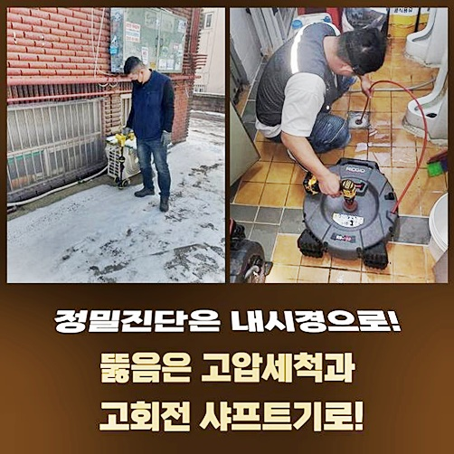
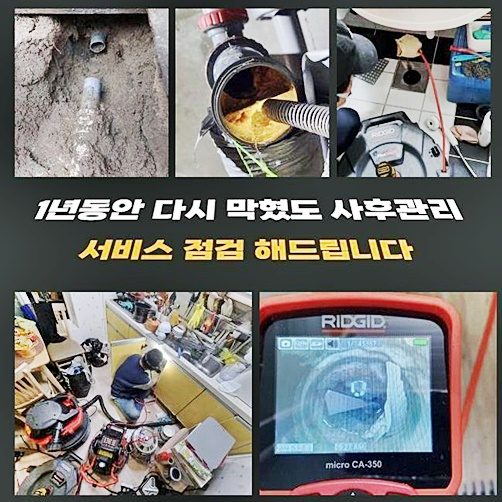
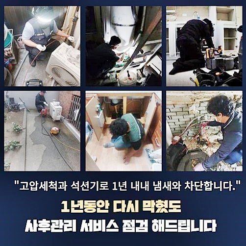
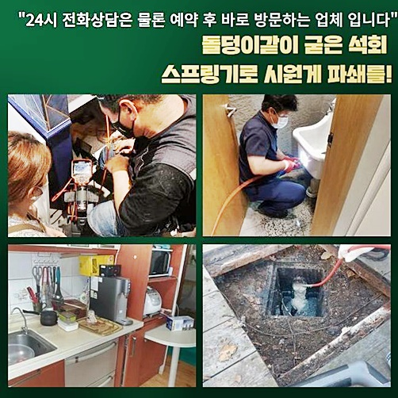
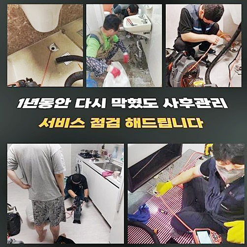
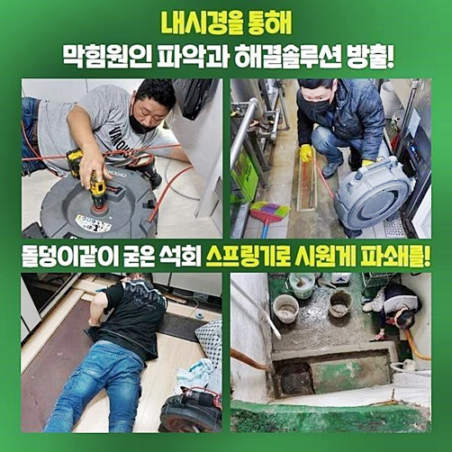

🏠 광진구 중곡동싱크대역류 군자동 하수관고압세척 설비업체
용인 싱크대막힘 전문 시공 후기

📋 작업 개요
- 위치: 용인
- 서비스 유형: 싱크대막힘, 변기막힘, 하수구막힘, 배관막힘, 역류해결, 뚫는업체, 배관청소, 고압세척, 배관보수, 악취차단
- 작업 일시: 2024. 8. 11. 10:31
- 업체명: 하수구수사대 (010-5615-2118)
🔍 문제 상황
광진구 중곡동싱크대역류 군자동 하수관고압세척 설비업체
배관 계열은 세월이 흐를수록 점진적으로 마모가 진행되며 여러가지 곤란함을 만들어낼 수 있습니다
신규 배관이 아니라면 어쩔 수 없이 이물질이 군집화되어 통로 자체를 메워버리고 점차 더욱 단단하게 오염물이 떼를 이루어서 이를 버티지 못하고 막힘이 일어나고 마는 것이죠
보통 어떤 오염원이냐면 끈적한 기름기와 머리카락 뭉치 비닐 쓰레기 등이 있는데 오랜기간 동안 쌓인다면 군집을 이루기 때문에 생활용수의 폐기 통로를 온전히 봉인하는 것이죠
나이가 든 배관이라면 정해진 시간에 실행하는 유지보수에 대한 노력이 필요하며 막힘이 찾아오는 순간을 미리 방어하는 것이 열쇠입니다
막힘의 초기 수준에서 잘못된 점을 체감하고 전문적 청소를 해주는 게 더 악화되는 것을 차단하는 적절한 역할을 수행합니다
실내에 끼치는 악영향이 늘어나지 않게끔 시간 간격에 맞게 검사를 들어가야 하는 상황이라면 시간에 맞게 방도를 시행하는 것이 중요한 사안입니다
상황을 전화로 전해들으니 단독주택이 아니다 보니 여러 세대원들에게 영향을 주는 데미지가 피어오르는 중이라 얼른 해결을 해드려야만 했습니다!
어떤 근방의 전문가가 출장갔으나 무엇 때문인지 감도 못 잡았다는 사실을 듣고 나니 이번 작업의 경우에는 심혈을 기울여야 할 것임을 미리 대비를 하게 됐어요
재시공에 들어가는 곳인만큼 더욱 철두철미하게 작업을 이끌어서 문제를 풀어드리는 게 필요했어요
다수의 케이스에 적용되는 기기들을 모두 싣고 빠른 속도로 현장으로 향하게 됐어요

🔎 원인 분석
💡 전문가 진단: 정밀 진단 장비를 사용하여 슬러지의 고착 여부를 판명하고 타격/세척 작업을 실시했습니다.
의뢰인분이 쫓기는 듯한 모습을 마주해보니 사건이 크다는 상황을 감지할 수 있었는데요
중심이 되는 시공 단계에 막무가내로 돌진하지 않고 어떤 절차로 시공이 나아가게 되는건지 청사진을 그려드리고 마음을 달래드렸습니다
이물질로 가득찬 통로를 열기 위해서 입구부터 세정작업을 하면서 물의 흐름이 점진적으로 확대되는 현황을 지속적으로 봐줍니다
새 파이프라인을 장착한 듯 화사하고 밝은 파이프에 빠른 유속으로 물이 배수되는 모습을 보는 걸 성과로 상정을 해두고 정진하게 됩니다
내부에 있는 다수의 찌꺼기를 약간씩 정돈을 해나가면서 틈도 없이 굳어버린 침전물들이 쌓여있는 바람에 제거하기도 난감한 섹션도 보였습니다
여러 지식을 보유한 전문진들은 뛰어난 기술력과 장치의 힘을 빌려서 빠르게 진단을 해보고 나서 시설물의 난관을 극복해 나갑니다!
올바른 판단을 이끌어 내려면 배관의 종류나 특성에 대한 이해가 충만하게 보유되어야 합니다
원인이 모호하다면 다시 막혀버리는 게 뻔하고 시원시원한 배수 기능을 복구하기는 어려움이 따를 겁니다
장소마다 문제되는 지점과 얼마나 심각한지 여부도 다른데다가 문제를 낳은 이물질이 접착된 장소에 따라서 들어가는 장비가 달라지기도 해요
지난 주 방문했던 타업체는 변기 시설물만 대충 살피고 변기 아래의 오수관까지는 체크하지 않았었다고 상황을 전달해 주셨어요
기대가 실망으로 돌아간 상황이라 처리안되면 어쩌지 노심초사하셨을 고객님께 공감하므로 고압세척기를 발동시켜서 청소했습니다
경로에 말라붙어 있는 다수의 오염원을 덜어내려고 고압수를 통한 세척을 해줬는데 똘똘 뭉쳐버린 물티슈 뭉치가 큰 근원이라고 보였습니다

🔧 작업 과정
걸어서 투출시키는 활동이 필요했으므로 오랜 소요시간이 필요했지만 방해물이 하나도 남지 않도록 청결하게 완수하게 됐습니다
물티슈는 수용성으로 분해되지 않으니 결코 변기통에 던져 넣지 않고 조심해서 물티슈를 이용하시라는 점을 재차 말씀드렸죠
한 세대도 욕실을 제대로 이용하지 못하는 불편함을 절실히 체감하고 계셨기에 얼른 정상화를 시켜드리는 게 당면한 미션이었습니다
근처 환경을 확인해 보았더니 하수구 내부가 정체를 빚다보니 거꾸로 샘솟는 사태까지 벌어진 나쁜 컨디션이었네요
초반에 가볍게 뚫는다면 보다 심플하겠지만 노폐물들이 고착화되어 버리면 역류나 파손같은 문제들을 줄지어 생기게 만드니 빨리 수습하는 게 최고에요
전문적인 데이터가 있기 때문에 무슨 상황인지 대강 분석되지만 명확도를 확보하기 위하여 오수관로를 진단해 보았습니다
하수구의 거름망을 꺼내보니 바로 악취가 풍겨나왔고 단단하게 굳어버린 이물질로 하수관이 꽉 틀어막힌 바람에 약간의 수량도 내려가지 못한 상황이었어요
썩은 듯한 냄새는 사용자분들에게 두통을 유발하게 되고 실내의 여러 시설물에도 침범할 수 있습니다
하수의 이동경로에 일어나는 부분들로 인해서 겉으로 노폐물이 튀어나온다면 건강에 대한 문제까지도 촉발될지도 모르는 시한폭탄이 되고 맙니다
실내 중에서도 욕실이라면 피부와 시설물이 밀접하게 닿는 경우들이 대부분이기 때문에 보다 케어를 해줘야 하는 구역으로 분류됩니다
유독 물이 굼뜨게 배출되거나 고이는 모습이 피어오르는 것을 목격한다면 빨리 하수관에 대한 전문진에게 전화해서 상황을 알리셔야 합니다
엄청난 구옥인데다 다수의 세대가 모여사는 건물일수록 더 자주 하수구가 막히는 증세가 발현되는 게 당연합니다
하수관의 오류를 감지한 다음 미루지 않고 처리할 수 있지만 일이 유발되기 이전에 체크를 받으면서 배관 불통을 방지하는 게 최선인데요
금전적인 절약도 가능한데다 많은 세대까지 곤란함을 겪지 않을 수 있겠죠
혼자서 처리하려고 용을 쓰는 것은 이미 약화된 배수로를 보다 더 찔러서 상처를 내는 격입니다
게다가 오래된 건물이라면 살짝 부담을 가하기만 해도 실금이나 굵은 공금이 생길 상황들을 예상할 수 있습니다
따라서 하수구 담당자에게 의뢰하여 원인을 찾아보고 적합한 방책을 세우는 것이 보다 바람직한 방법입니다
전용 카메라를 주입한다면 보이지않는 배관의 내면까지도 낱낱이 볼 수 있으니 오염물의 종류라거나 크기를 정확도 높게 데이터화할 수 있습니다
생활용수가 이동하게 되는 모양새를 따라가면서 전체적인 파이프를 확인절차 거쳐보니 이물질이 뱀처럼 긴 모양으로 벽체에 달라붙어 있었어요


✅ 작업 완료
넓은 구역에 이물질이 분포한 현장이면 고압세척기를 이용해서 배관 전체를 일시에 세척하는 편이 나아요
윗부분부터 점진적으로 오물을 갉아내는 대신 센 물줄기의 힘을 통해서 명쾌하게 해결을 볼 수 있어요
세척을 하면서도 내시경을 검토를 계속 해나가면서 고압세척의 정도나 적절한 방향 조정을 전문가로서 손봐줘야 합니다
집에서 흔히 구하는 뚫어뻥을 넣는 것은 효과가 짧은 대응일 뿐이지 근본적인 개선책은 아닙니다
전문 장비들을 통한 진단을 시행해야만 만족도가 높은 보수가 가능하다는 점을 필히 기억해주시고 문제가 수면 위로 드러난다면 지체 없이 연락하시면 저희가 출동가겠습니다



⚠️ 주방 싱크대 배관 막힘 예방 수칙
- ✅ 기름기가 묻은 식기나 프라이팬은 설거지 전 키친타올로 반드시 기름때를 닦아내세요.
- ✅ 주기적으로 싱크대 개수대에 뜨거운 물을 가득 받아 한 번에 내려 배관 내부 기름을 씻어내세요.
- ✅ 배수구 거름망을 미세한 필터로 사용하시고 음식물 찌꺼기가 틈으로 새어 들지 않게 관리하세요.
- ✅ 베이킹소다와 식초를 뜨거운 물과 함께 일주일에 한 번씩 부어주면 배관 살균과 막힘 예방에 좋습니다.
💡 핵심 정리
- 확실한 장비 작업(내시경 점검 및 샤프트 스케일링)으로 원인을 뿌리 뽑습니다.
- 작업 후 1년 이내에 동일한 부위 재발 시 100% 무상 A/S 서비스를 보장합니다.
- 서울 · 경기 · 인천 전 지역에 24시간 언제든 긴급 출동할 수 있도록 항시 대기 중입니다.
❓ 자주 묻는 질문 (FAQ)
🚨 용인 싱크대막힘 문제로 고민이신가요?
정확한 원인 진단과 확실한 시공으로 재발 없는 해결을 약속드립니다.
24시간 긴급 출동 | 서울 · 경기 · 인천 전지역 | 1년 내 재발 시 무상 A/S